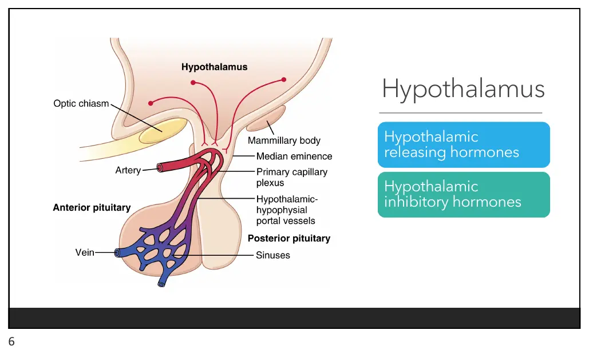
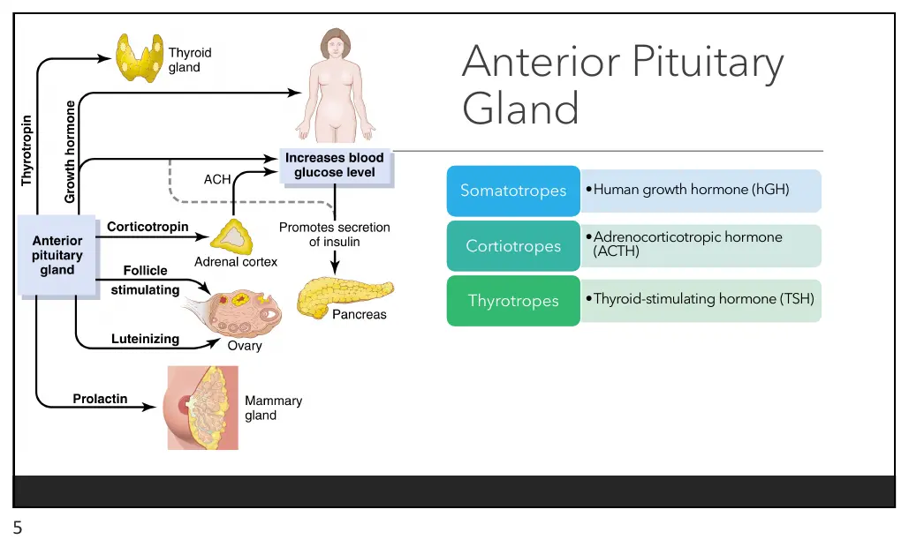

Courses › Human Physiology › Module 10
Human Physiology · 6131
Module 10 — The Endocrine System
Topics: 10.1 Cell Communication • 10.2 Glands & Hormones • 10.3 Endocrine Pathophysiology & Aging
📖 How to Use These Notes
- Best used with the lecture playing — keep these open, follow along, and add your own notes as you watch
- Lecture banners mark the start of each topic and run in the same order as the videos
- 🎙 Callouts = direct insights from the instructor's transcript
- ★ Tips = exam-relevant content or things the instructor told you to prepare
- Figures are taken directly from the module's slide decks
- Each topic ends with its own Quick-Reference Glossary
- Written from last year's recordings — if a lecture has been re-recorded or resequenced, Canvas wins
- Lectures by Dr. Evan Andreyo; watch in your own Canvas module. The instructor's framing device: the endocrine system is the body's Wi-Fi
- The module hands out a blank Endocrine Memory Matrix worksheet — the final section of these notes is that matrix, filled in. Quiz yourself against the blank first
- Pattern to carry through every gland: hormone → function → release stimulus → what goes wrong hyper vs hypo
- Guyton & Hall endocrine chapters + Goodman & Fuller pathology are the referenced texts
TOPIC 10.1
Cell Communication — How Hormones Talk
1. Ways cells communicate
- Autocrine — a cell signals itself. Synaptic — neuron to neuron. Paracrine — a cell signals its neighbors (within an organ). Endocrine — signaling ACROSS the body through the bloodstream (the module's focus). Exocrine — secreting OUT of the body (sweat).
2. Hormone classes and their manufacture
| Class | Built from | Examples | Key property |
|---|---|---|---|
| Peptide/protein | Amino-acid chains (rough ER → Golgi → secretory vesicles, released by exocytosis on stimulus) | Insulin, parathyroid hormone | Water-soluble — must act on MEMBRANE receptors |
| Steroid | Cholesterol (smooth ER); usually not stored — released and carried on transport proteins | Cortisol, estrogen, testosterone, aldosterone | Lipid-soluble — diffuses straight through the membrane to receptors in the cytoplasm/nucleus |
| Amine | Modified amino acids | Catecholamines: epinephrine, norepinephrine (adrenal medulla) | Fast actors — an adrenaline hit lands in seconds (vs growth hormone working over days–months) |
- Hormones circulate in tiny, tightly regulated concentrations — a little goes a long way. Most run on negative feedback (return to set point: temperature, blood pressure); a few use positive feedback (amplify the stimulus: oxytocin in labor, LH/estrogen at ovulation).
3. Receptor mechanisms
| Mechanism | How it works | Used by |
|---|---|---|
| Ion-channel-linked | Hormone binding opens/closes membrane channels — ion flux (Na⁺, K⁺, Ca²⁺) changes the cell | Covered with neurotransmission in Module 5 |
| G-protein-linked | Hormone → membrane receptor → intracellular G-protein swaps GDP for GTP → the α-subunit migrates and activates a target enzyme | Very many hormones — the front end of the cAMP story below |
| Enzyme-linked | Hormone → receptor activates an enzyme (e.g., JAK2 kinase) → STAT protein → nucleus → altered mRNA transcription and protein synthesis | Leptin, growth hormone, insulin, IGF, prolactin |
| Intracellular (steroid) | Lipophilic hormone diffuses through the membrane, binds a cytoplasm/nucleus receptor → response element on DNA → mRNA → ribosomes build new proteins | Aldosterone, thyroid hormones |
4. Second messengers
- Cyclic AMP (the big one): hormone → G-protein → adenylyl cyclase converts ATP → cAMP → activates cAMP-dependent protein kinases → cascade of cell responses. A long roster of hormones runs on this.
- Phospholipid pathway: G-protein → phospholipase C splits PIP₂ into IP₃ (releases calcium from the endoplasmic reticulum) and DAG (activates other enzymes).
- Calcium–calmodulin: Ca²⁺ (entering or released internally) binds calmodulin → activates myosin light-chain kinase → smooth-muscle contraction (this is how hormones move your gut).
TOPIC 10.2
Glands & Hormones — the Tour
5. Hypothalamus → pituitary: the command chain
The hypothalamus is the boss. It commands the kidney-bean-sized pituitary two different ways: the anterior pituitary receives hypothalamic releasing and inhibitory hormones through portal vessels at the median eminence ("Wi-Fi"); the posterior pituitary is hard-wired by neurons — it stores nothing of its own, just releases what the hypothalamus pipes down: ADH (water retention by the kidneys) and oxytocin (uterine contractions, lactation).
| Anterior pituitary cell type | Hormone released | Goes to / does |
|---|---|---|
| Somatotropes (~40% of cells) | Growth hormone | Acts widely itself — see below |
| Corticotropes (~20%) | ACTH | Adrenal cortex → cortisol |
| Thyrotropes | TSH | Thyroid → T3/T4 |
| Gonadotropes | LH + FSH | Testes/ovaries → testosterone, estrogen, progesterone |
| Lactotropes | Prolactin | Mammary glands → milk production (acts directly) |


- Growth hormone deserves its own paragraph: it drives growth of body tissue (cell size, number, differentiation), boosts protein uptake/synthesis, shifts fuel toward fat (fatty acids → acetyl-CoA) while sparing glucose, and stimulates skeletal and chondral cell reproduction. It works arm-in-arm with IGF-1 from the liver. Stimulated by: low blood glucose/free fatty acids, exercise, trauma, stress, testosterone/estrogen. Inhibited by: abundant GH/IGF-1 (negative feedback), high blood glucose, aging, obesity.
6. Thyroid
- TSH + dietary iodine + thyroglobulin → T4 (~93% of output, the INACTIVE form) and T3 (~7%, the ACTIVE form) — T4 is slowly converted to T3. Effect: raises metabolic rate and cardiovascular activity. Slow mover: bound to plasma proteins, ~2–3 days to onset, half-life ~15 days. Cold exposure stimulates it (shivering = metabolism turned up for heat). The thyroid also makes calcitonin — the weak opponent of PTH that nudges calcium INTO bone.
7. Adrenal glands (on top of the kidneys)
| MEDULLA (the jelly center) | CORTEX (the outer shell) |
|---|---|
| Releases catecholamines: epinephrine + norepinephrine | Releases corticosteroids in three families: mineralocorticoids (electrolytes), glucocorticoids (blood glucose), androgens (testosterone-like) |
| Sympathetic fight-or-flight effects, in seconds | Aldosterone (mineralocorticoid): kidneys resorb sodium → water follows → blood volume and pressure rise; potassium excreted |
| Cortisol (glucocorticoid): raises gluconeogenesis (protein/fat → glucose), and BLUNTS inflammation — stabilizes lysosomes, lowers capillary permeability, slows WBC activity. The stress hormone: stress → hypothalamus → ACTH → cortisol; cortisol then feeds back to shut itself off. Chronic stress keeps it high → suppressed protein synthesis and immunity (why chronically stressed people get sick) |
8. Pancreas, parathyroids, reproductive axis
- Pancreas — islets of Langerhans: alpha cells → glucagon (low glucose → liver glycogenolysis; runs on a cAMP amplifying cascade, so a little goes far); beta cells → insulin (high glucose → glucose into cells and storage). Module 9's territory, now with the cell biology attached.
- Parathyroids (4 tiny glands behind the thyroid; chief cells → PTH): low calcium → PTH rises → kidneys retain calcium, intestines absorb more (with vitamin D boosting calcium-binding proteins), and bone gives calcium up — fast via osteolysis, slower via osteoclast proliferation. The molecular switch: PTH suppresses OPG (the decoy) so RANKL can bind RANK on pre-osteoclasts → mature osteoclasts chew bone and free calcium. Calcium is stored overwhelmingly in bone (with ~85% of phosphate); remodeling normally deposits and resorbs in balance.
- Reproductive axis: hypothalamic GnRH → anterior pituitary LH + FSH (silent until puberty: ~10–13 in males, 9–12 in females) → testes → testosterone (male characteristics, ~50% greater muscle development; women circulate ~20-fold less) and ovaries → estrogen (breast development, menarche, and inhibition of osteoclasts — the osteoporosis link) + progesterone (uterine effects).
9. Exercise endocrinology
- Repeated training stress raises local hormone concentrations, receptor density, AND receptor sensitivity — an anabolic environment. The anabolic three: testosterone, growth hormone, IGF-1. Cortisol rides along as the catabolic counterweight — acutely useful (clears damaged proteins, frees amino acids for rebuild), chronically destructive (overtraining). Catecholamines (epi, norepi, dopamine) rise with exercise: more force production, vasodilation, hormone potentiation — and dopamine is the reward signal that makes exercise feel worth repeating.
TOPIC 10.3
Endocrine Pathophysiology & Aging
10. Gland by gland: hyper vs hypo
| Gland | HYPER (too much) | HYPO (too little) |
|---|---|---|
| Anterior pituitary | GH-secreting (usually benign) tumor → gigantism (before the physes close — rapid childhood long-bone overgrowth) or acromegaly (after closure — bone thickening, soft-tissue hypertrophy, coarse features, jaw protrusion, broad hands; think Andre the Giant). Consequences: muscle weakness, arthritis, osteophytes, tumor mass effects. Treat: GH-suppressing meds, tumor surgery/radiation — best caught early | Hypo/panhypopituitarism (tumor that DOESN'T secrete, clots, idiopathic): GH deficiency → dwarfism (short stature, delayed growth); low ACTH → adrenal underactivity; low TSH → hypothyroid; low gonadotropins → amenorrhea, infertility, low libido. Treat: remove tumor if present; otherwise hormone replacement |
| Thyroid | Graves' disease (~85% of hyperthyroidism; autoimmune, female-predominant): immune attack hypertrophies the thyroid → thyroxine excess → sympathetic overdrive — nervousness, weight loss, tremor, sweating, diarrhea, tachycardia/palpitations, thyroid enlargement, exophthalmos (bulging eyes from retro-orbital swelling). Treat: antithyroid meds, radioiodine, surgery — usually effective | Often congenital; also Hashimoto (autoimmune), surgical tissue loss, radiation, medications, iodine deficiency (rare in the US — iodized salt). Slowed metabolism: fatigue, depression, edema, weight gain, decreased cardiac activity, infertility, fibromyalgia association; goiter = enlarged thyroid (tumor, inflammation, or iodine lack) |
| Parathyroid | Tumor/enlarged gland (or secondary: vitamin D deficiency, renal failure; tertiary: dialysis) → PTH excess → runaway osteoclasts → hypercalcemia: bone loss, kidney stress, depressed neuromuscular function | PTH deficiency → hypocalcemia → neuromuscular over-excitation → tetany (muscles locked in contraction) |
| Adrenals | Cushing's syndrome = cortisol excess (tumor, excessive corticosteroid medication, or ACTH excess — if from an anterior pituitary tumor it's Cushing's disease): muscle wasting (amino acids liberated), hyperglycemia, fat redistribution — moon face + truncal obesity with slender limbs — and bone loss | Adrenal insufficiency (Addison's) — ~400k US adults, women 40–60, often idiopathic/autoimmune: low cortisol → less gluconeogenesis → fatigue, low liver glycogen, poor stress tolerance; low aldosterone → sodium loss → dehydration and hypotension (potentially deadly); hallmark darkened skin pigmentation (ACTH ↔ melanocyte-stimulating hormone link). Treat: fluids, electrolytes, glucose, then corticosteroid/mineralocorticoid replacement |
11. The aging endocrine system
- General rule: glands secrete less AND target cells respond less. The pituitary loses ~75% of its weight; pituitary and thyroid lose blood supply, gain fibrosis and cysts. The two most common aging endocrinopathies: type 2 diabetes (target-cell resistance) and hypothyroidism (slowed metabolism). The good news: parathyroids and adrenals mostly keep working.
- Falling growth hormone → more fat storage, less lean mass, less bone, thinner skin, disturbed sleep. Reproductive hormones: menopause is a sharp estrogen shut-off (→ bone mineral density loss, the osteoporosis link again); men decline gradually in testosterone (muscle/bone loss, prostate hypertrophy — hence the age-50 checks).
Exercise is medicine — the endocrine edition
- Training raises growth hormone, sex hormones, and IGF-1 at every age
- Improves glucose utilization (diabetes) and bone mineral density (osteoporosis)
- Hormone replacement (e.g., estrogen for osteoporosis) exists — but exercise is the intervention the PT owns
MEMORY MATRIX
The Module Worksheet, Filled In
The course hands this out blank — fill it from memory, then check here.
| Hormone | Primary functions | Release stimulus | Associated pathology |
|---|---|---|---|
| Hypothalamic releasing / inhibitory hormones | Tell the anterior pituitary to secrete more (releasing) or less (inhibitory) of each of its hormones — one pair per pituitary hormone, delivered via portal vessels | Central integration of body state | — |
| Growth hormone (anterior pituitary; peptide) | Tissue growth (cell size/number/differentiation), protein synthesis, fat utilization, glucose sparing, bone + cartilage cell reproduction; partners with IGF-1 | Low glucose/FFAs, exercise, trauma, stress, sex hormones; inhibited by GH/IGF-1 excess, high glucose, aging, obesity | Gigantism (pre-physis closure) • acromegaly (post) • dwarfism (deficiency) |
| ACTH (anterior pituitary) | Drives the adrenal cortex to release cortisol | Stress via hypothalamus (CRH) | Cushing's disease (excess) • adrenal insufficiency (deficit) |
| TSH (anterior pituitary) | Drives thyroid T3/T4 production | Hypothalamic TRH; cold | Secondary hyper/hypothyroidism |
| LH + FSH (anterior pituitary) | Drive gonads: testosterone (testes), estrogen/progesterone + ovulation (ovaries) | GnRH from the hypothalamus, from puberty on | Infertility, amenorrhea, low libido when deficient |
| Prolactin (anterior pituitary) | Milk production at the mammary glands | Pregnancy/nursing | — |
| ADH / vasopressin (posterior pituitary) | Kidneys retain water | Dehydration / raised plasma osmolarity | Water balance disorders (diabetes insipidus — later module) |
| Oxytocin (posterior pituitary) | Uterine contractions in labor; lactation | Positive feedback — fetal head on cervix → more oxytocin → stronger contractions | — |
| Parathyroid hormone (peptide; chief cells) | Raises blood calcium: kidney retention, intestinal absorption (with vitamin D), bone resorption via RANKL/RANK-driven osteoclasts | Low blood calcium | Hyper → hypercalcemia + bone loss • hypo → hypocalcemia + tetany |
| T3/T4 (thyroid) | Raise metabolic rate + cardiovascular activity (T4 = inactive 93%, converted to active T3); slow onset, 15-day half-life | TSH; cold; requires iodine | Graves' (hyper) • Hashimoto/congenital hypothyroidism, goiter |
| Calcitonin (thyroid) | Weakly LOWERS plasma calcium (deposits into bone) — PTH's counterweight | High blood calcium | — |
| Epinephrine + norepinephrine (adrenal medulla; amines) | Fight-or-flight: heart rate, force production, vasodilation to muscle — in seconds | Sympathetic activation, stress, exercise | — |
| Aldosterone (adrenal cortex; mineralocorticoid) | Sodium retention → water retention → blood volume/pressure up; potassium excretion | Low blood volume/pressure, electrolyte shifts | Deficient in Addison's → dehydration, hypotension |
| Cortisol (adrenal cortex; glucocorticoid) | Gluconeogenesis; anti-inflammatory (stabilizes lysosomes, ↓capillary permeability, ↓WBC activity); frees protein/fat for repair but inhibits protein synthesis | Stress (physical or mental) → CRH → ACTH; self-limiting by negative feedback | Cushing's (excess) • Addison's (deficit) • chronic stress = immune suppression |
| Insulin (pancreatic beta cells; peptide) | Glucose into cells and into liver/muscle glycogen storage; promotes protein/fat synthesis | High blood glucose | Type 1 (production loss) • type 2 (resistance) diabetes |
| Glucagon (pancreatic alpha cells) | Liver glycogenolysis → raises blood glucose; cAMP amplifying cascade | Low blood glucose | Part of every dysglycemia story |
| Estrogen (ovaries) | Breast development, menarche/cycle; inhibits osteoclasts → protects bone | LH/FSH from puberty; falls sharply at menopause | Menopause → bone mineral density loss → osteoporosis |
| Progesterone (ovaries) | Uterine preparation and cycle regulation | LH/FSH axis | Cycle dysfunction |
| Testosterone (testes) | Male secondary characteristics; ~50% greater muscle development; stimulates GH release | LH from puberty on; gradual decline with age | Age-related decline → muscle/bone loss, prostate hypertrophy |
Module 10 — Quick-Reference Glossary
| Term | Definition |
|---|---|
| Second messenger | Intracellular relay (cAMP, IP₃/DAG, Ca²⁺–calmodulin) that turns a membrane binding event into a cell-wide response |
| JAK/STAT | Enzyme-linked receptor path to the nucleus — leptin, GH, insulin, IGF, prolactin |
| Median eminence / portal vessels | The hypothalamus→anterior pituitary delivery route |
| Islets of Langerhans | Pancreatic hormone factories: alpha = glucagon, beta = insulin |
| RANK / RANKL / OPG | The osteoclast activation switch; PTH removes the OPG decoy |
| Graves' / Hashimoto | The autoimmune hyper- and hypothyroid diseases, respectively |
| Addison's / Cushing's | Adrenal cortisol deficit / excess (Cushing's DISEASE = pituitary ACTH tumor) |
| Exophthalmos | Eye bulging from retro-orbital swelling in Graves' disease |
| Tetany | Sustained involuntary contraction — the hypocalcemia signature |
| Anabolic vs catabolic | Build up (testosterone, GH, IGF-1) vs break down (cortisol) |